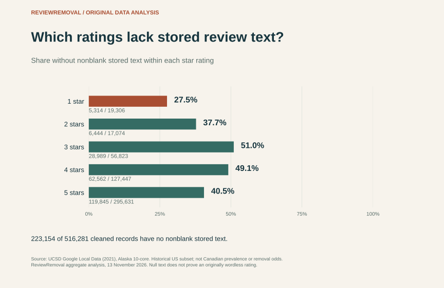
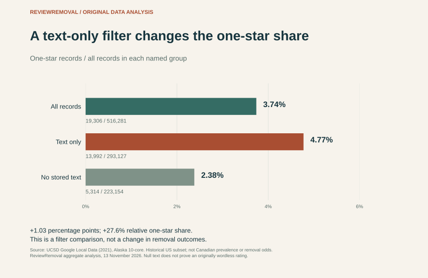
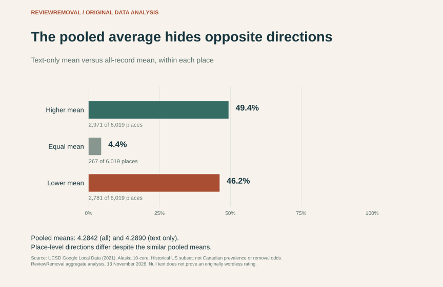

Published by ReviewRemoval. Authorship, sources and correction standards.
On this page
Can a Google rating without written text be removed?
A missing comment is not, by itself, evidence that a Google rating violates a policy. It is also a poor reason to leave the rating out of an assessment. In our new analysis of 516,281 cleaned historical Google Maps records, 223,154 (43.2%) had no nonblank stored text. A spreadsheet that kept only written comments would exclude all of them.
Google lets people select stars and optionally add words. Its Maps contribution instructions treat a rating and a written comment as different parts of the contribution. For removal, the question is whether a policy was violated—not whether the reviewer explained their score. Google’s reporting guidance says “only those that violate Google policies are eligible for removal”.
What we actually measured
We reanalysed UCSD’s public Alaska 10-core Google Local archive, collected up to September 2021. This is a selected historical US dataset, not a Canadian survey or a current Google-wide estimate. “No stored text” means the archive has no nonblank string in that field. We cannot establish whether every such record was originally wordless or whether collection missingness contributed.
The useful result is an export-quality finding: the choice to require written text changes which ratings survive analysis. It changes their proportions, too. That matters when a business owner sends a review spreadsheet to a consultant, compares ratings with comments, or asks for help with potentially policy-violating reviews.
Three findings worth keeping together
- The omitted records were not evenly distributed across star ratings. About 27.5% of one-star records lacked text, compared with 51.0% of three-star records.
- A higher apparent one-star share did not mean more one-star records. The text filter reduced the one-star count from 19,306 to 13,992, while reducing its denominator even more.
- The almost unchanged pooled mean concealed different place-level directions. Under the filter, 2,971 archived place means were higher, 2,781 were lower and 267 were equal. None of those changes represents an actual review removal.
What a text-only export drops, by star rating
We split the cleaned records by rating and by whether the stored text field contained a nonblank string. The table reports counts before percentages, so the denominator of each comparison is visible. Each row’s percentage uses all records with that star value.



| Rating | With text | Without text | All records | Without text / all |
|---|---|---|---|---|
| 1 star | 13,992 | 5,314 | 19,306 | 27.5% |
| 2 stars | 10,630 | 6,444 | 17,074 | 37.7% |
| 3 stars | 27,834 | 28,989 | 56,823 | 51.0% |
| 4 stars | 64,885 | 62,562 | 127,447 | 49.1% |
| 5 stars | 175,786 | 119,845 | 295,631 | 40.5% |
Scroll sideways to see every column.
The omitted group contained 5,314 one-star records, but it was much larger than that: 119,845 five-star records also lacked stored text. A text-only file is not simply an inventory with “unhelpful” low ratings removed. It excludes records throughout the scale.
We call this text-coverage bias: the observed rating mix after filtering differs from the mix before filtering. The term describes the comparison here; it is not an assertion that the archive is a complete census, that anyone intentionally distorted it, or that Google treats these records differently.
The one-star share rises—even while the one-star count falls
Across all cleaned records, 19,306 of 516,281 were one-star: 3.74%. Among text-bearing records, 13,992 of 293,127 were one-star: 4.77%. The difference is 1.03 percentage points, or a 27.6% relative increase in the share.



| Frame | All records | One-star records | One-star share | Mean stars |
|---|---|---|---|---|
| All cleaned records | 516,281 | 19,306 | 3.74% | 4.2842 |
| Text-bearing records only | 293,127 | 13,992 | 4.77% | 4.2890 |
| No stored text only | 223,154 | 5,314 | 2.38% | 4.2780 |
Scroll sideways to see every column.
This is an easy reporting error to make. A dashboard titled “our negative review share” might quietly mean “one-star share among records with a comment”. That narrower statement can be useful, but it answers a different question. Comparing it with a Google listing’s total rating count would mix two populations.
A quotable finding, with its scope intact
“In ReviewRemoval’s cleaned Alaska 10-core archive, requiring written text excluded 43.2% of records and raised the apparent one-star share from 3.74% to 4.77%. That was a filtering effect, not a change in Google reviews.”
Use this wording with the date, a link to this article and attribution to the underlying UCSD dataset. Please do not shorten it to “43% of Canadian Google reviews have no text”.
Why the pooled average is a weak quality check
The all-record pooled mean was 4.2842; the text-only pooled mean was 4.2890. At one decimal place, both would read 4.3. That similarity could make an incomplete export look reassuringly accurate.
Within individual archived places, the directions were mixed. We compared the mean of all included records for each place with the mean of that same place’s text-bearing records. Every one of the 6,019 retained place IDs had at least one text-bearing record. Each place counts once in this comparison, regardless of how many records it contains.



| Text-only mean is… | Places | Share of 6,019 places |
|---|---|---|
| Higher | 2,971 | 49.4% |
| Equal | 267 | 4.4% |
| Lower | 2,781 | 46.2% |
Scroll sideways to see every column.
For 2,378 places, the absolute difference between those two archive means was at least 0.1 star. This is a threshold on the unrounded calculated means; it is not a claim that a live listing’s displayed score moved by 0.1.
Google says its review score uses all published ratings. Our archive is a selected subset with a historical cutoff. Even its all-record mean is therefore not a reconstruction of a complete live Google Business Profile score. Our separate rating-impact study explains why displayed scores and exact underlying averages also need careful separation.
No stored comment did not always mean no photo metadata
We found 2,047 cleaned records with no stored text but a nonempty photo list. Across all cleaned records, 20,479 had a nonempty photo list, so a text-only filter would omit about 10.0% of that metadata-bearing group.
We did not download or inspect the images. A nonempty list is not proof that an image is still available, depicts a real customer experience or supports a policy complaint. The narrower lesson is practical: “has written text” and “has other attached material” are different fields. Discarding a record on the first field can also discard the second.
| Stored text | Nonempty photo list | Empty photo list |
|---|---|---|
| Present | 18,432 | 274,695 |
| Absent | 2,047 | 221,107 |
Scroll sideways to see every column.
A better assessment file for a Canadian business
The sample cannot supply a Canadian missing-text percentage. It can expose a workflow weakness that a business in Toronto, Vancouver, Calgary or elsewhere can check in its own files. Before paying for Google review removal assistance, keep the following distinctions visible:
- Inventory the rating before analysing its wording. Include the star value, direct public review reference where available, the date observed and whether text or attachments are present. A record should not vanish merely because there is no sentence to analyse.
- Write down the coverage rule. Is the file all observed ratings, only written comments, recent entries, or selected concerns? Retain the original export separately. Never assume a comment export equals a complete listing history.
- Separate a concern from evidence. “I do not recognise this name” or “there is no comment” does not establish abuse. Record a specific, supportable policy concern and relevant context. Keep private customer records out of public replies and general enquiry forms.
- Keep reporting and outcome fields distinct. A submitted report, an appeal, a missing record in an export and a confirmed takedown are different events. Preserve the reference, status and observation date rather than inferring a removal from a spreadsheet filter.
- Ask for an explanation before paid work begins. A useful assessment identifies the possible policy issue, evidence gaps and applicable reporting route. It should not promise to delete every negative or wordless rating.
For a structured starting point, use our Google review evidence checker or the reporting evidence checklist. ReviewRemoval assists Canadian businesses with assessing and reporting potentially policy-violating Google reviews. An assessment does not require your Google password, and removal is not guaranteed.
Methods: source, cleaning and reproducibility
We downloaded the Alaska 10-core JSON gzip from UCSD’s Google Local Data (2021) release on November 13, 2026. We chose one state’s compact archive for an inspectable, reproducible field-coverage audit—not to estimate Canada, select successful removal cases or optimise a result. The release describes a collection cutoff of September 2021. “10-core” selects dense user/place histories; it is not a random state sample. We did not rerun the core selection after cleaning.
- Pin the source. The compressed input is 36,962,271 bytes and contains 521,515 JSON records. Its SHA-256 is provided in the downloadable JSON and Python script. A different fingerprint makes the script stop.
- Resolve repeated records conservatively. There were 516,289 distinct user/place/timestamp keys and 5,226 repeated-key occurrences. We compared canonical full JSON objects, kept one copy of identical records, and excluded all eight keys with differing versions. That leaves 516,281 records. We do not claim that every possible duplicate can be detected from these fields.
- Classify stored text. A record is text-bearing when its text field is a string with at least one non-whitespace character after Python’s
str.strip(). Otherwise it is in the no-stored-text group. The raw source fields were strings or null; no natural-language, sentiment or authenticity classifier was used. - Calculate each frame separately. Mean stars = sum of star values ÷ included record count. One-star share = one-star count ÷ all records in that same frame. Percentage-point change subtracts shares; relative change divides the text-only share by the all-record share and subtracts one.
- Compare place means exactly. We compare cross-multiplied integer sums and counts to identify higher, equal or lower means. We do not classify a tiny floating-point rounding error as a difference.
- Check sensitivity. Without any deduplication, the no-text share is 42.81%, and the one-star shares are 3.76% and 4.79% for all and text-only records. The filter contrast remains. Raw-input sensitivity values are included in the JSON.
Limits that travel with the charts
This is a historical, selected US archive. Null text can reflect missing collection data, and archived place IDs are not a verified list of active businesses. Neither text availability nor a one-star score establishes authenticity, policy eligibility or customer identity. There are no removal decisions or complete live profiles here. We did not run a causal experiment, estimate Canadian prevalence, measure our service’s outcomes or test whether Google favours any kind of review.
The source release requests citation of Li, Shang and McAuley’s UCTopic (ACL 2022) and Yan and colleagues’ Personalized Showcases (SIGIR 2023). We cite both as requested. They are source research, not publications of the new coverage calculations above, and their authors have not endorsed this analysis.
Questions business owners ask
Is a one-star rating without a comment automatically fake?
No. The absence of a comment supplies no authenticity label. Google’s contribution policy addresses whether an experience is genuine and whether manipulation or other prohibited conduct occurred. A star value alone cannot settle those questions.
Can a review without text affect the Google score?
Google describes the score as the average of all published ratings, rather than only those accompanied by comments. See its score explanation. This study’s archive means are separate calculations and should not be substituted for a live listing score.
Does the 27.6% increase mean removal is more likely?
No. It is the relative change in the one-star share after an export filter. No removal outcomes were present. A policy assessment needs evidence about the individual contribution.
Should I include ratings with no comment when requesting an assessment?
Include the concern and the public reference if you have one. Explain the relevant context briefly; do not send account passwords or private customer files. We can identify evidence gaps and explain whether there is a supportable reporting route. A legitimate critical review may remain.
Download the dataset, code and charts
This new research output contains 16 aggregate CSV rows: five rating groups, three filter frames, four place-direction groups and four text/photo combinations. The fourth direction group records that zero places lacked a text-bearing record. No raw reviews, reviewer names, user/place IDs or image URLs are republished.
Download the source gzip from the linked UCSD release, then run: python google-text-coverage-analysis.py --source review-Alaska_10.json.gz --output replication. Python’s standard library is sufficient. The input fingerprint, exclusions and formulas are in the output JSON. Figures can be downloaded beside each chart.
Suggested citation
ReviewRemoval (2026). “Google reviews without text: a 516,281-record audit.” November 13, 2026. Version 1.0.0. https://reviewremoval.ca/blog/google-reviews-without-text-data-study.html. Original aggregate reanalysis of UCSD Google Local Data (2021), Alaska 10-core. Cite the underlying dataset and its requested source papers as well.
You may cite our original aggregate tables and figures with attribution and a link to this article. This does not grant rights to, or relicense, the underlying Google content. Source data remain attributed to their creators. For errors or replication questions, use our editorial correction process.
Primary sources
- Tianyang Zhang and Jiacheng Li, UCSD: Google Local Data (2021). Dataset description, citation instructions, Alaska 10-core file and source scope; accessed November 13, 2026.
- Jiacheng Li, Jingbo Shang and Julian McAuley (2022), UCTopic: Unsupervised Contrastive Learning for Phrase Representations and Topic Mining. ACL, pp. 6159–6169. DOI: 10.18653/v1/2022.acl-long.426.
- An Yan, Zhankui He, Jiacheng Li, Tianyang Zhang and Julian McAuley (2023), Personalized Showcases: Generating Multi-Modal Explanations for Recommendations. SIGIR 2023; arXiv version revised April 6, 2023.
- Google Maps Help: Add, edit or delete reviews and ratings. Contribution instructions; accessed November 13, 2026.
- Google Business Profile Help: Report inappropriate reviews. Removal eligibility and reporting; accessed November 13, 2026.
- Google Business Profile Help: Understand review scores. Published-rating denominator; accessed November 13, 2026.
- Google Maps: Prohibited and restricted content. Genuine-experience and manipulation policies; accessed November 13, 2026.
Need help with a specific review?
Send the platform and the review link. We’ll assess the details and explain the price before paid work begins.
Request a Google review assessment